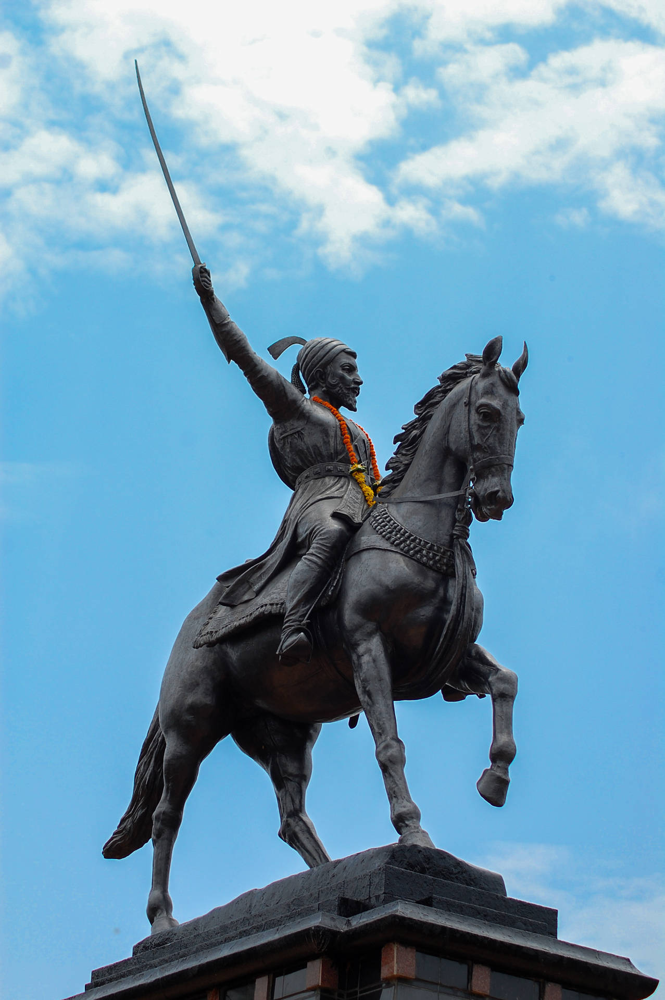

offcanvas with collapse

Chhatrapati Shivaji Maharaj – Life Journey
- Birth: Born on 19th February 1630 at Shivneri Fort, Maharashtra.
Parents: Shahaji Raje and Jijabai.
- Inspiration: Inspired by his mother Jijabai's stories of bravery
and
dharma. Took the Swarajya oath at Raireshwar Temple.
- Early Achievements: Captured Torna Fort at age 16 and started
building
his kingdom.
- Good Governance: Promoted justice, respected all religions, and
protected common people and women.
- Legacy: Died in 1680. Remembered as a great warrior, wise ruler,
and a
national hero of India.
Recreate